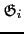
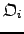
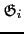
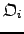
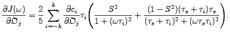
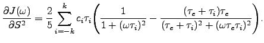
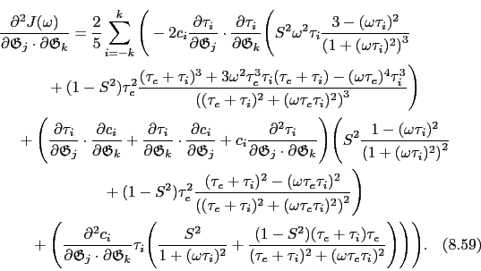

Next: The original model-free Hessian Up: Model-free analysis Previous: The model-free equations Contents Index
The model-free gradient of the original spectral density function ( ) is the vector of partial derivatives of the function with respect to the geometric parameter

, the orientational parameter

, the order parameter
, and the internal correlation time
. The positions in the vector correspond to the model parameters which are being optimised.
) is the vector of partial derivatives of the function with respect to the geometric parameter

, the orientational parameter

, the order parameter
, and the internal correlation time
. The positions in the vector correspond to the model parameters which are being optimised.
The partial derivative of ( ) with respect to the geometric parameter
) with respect to the geometric parameter
 is
is
The partial derivative of ( ) with respect to the orientational parameter
is
) with respect to the orientational parameter
is
|  | (theparentequation.65) |
The partial derivative of ( ) with respect to the order parameter
is
) with respect to the order parameter
is
|  | (theparentequation.66) |
The partial derivative of ( ) with respect to the correlation time
is
) with respect to the correlation time
is
|  | (theparentequation.67) |